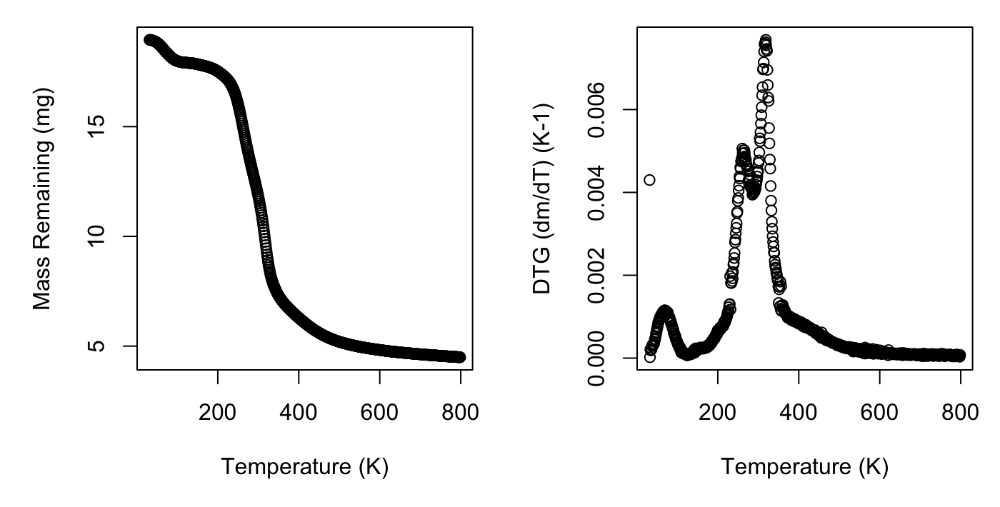
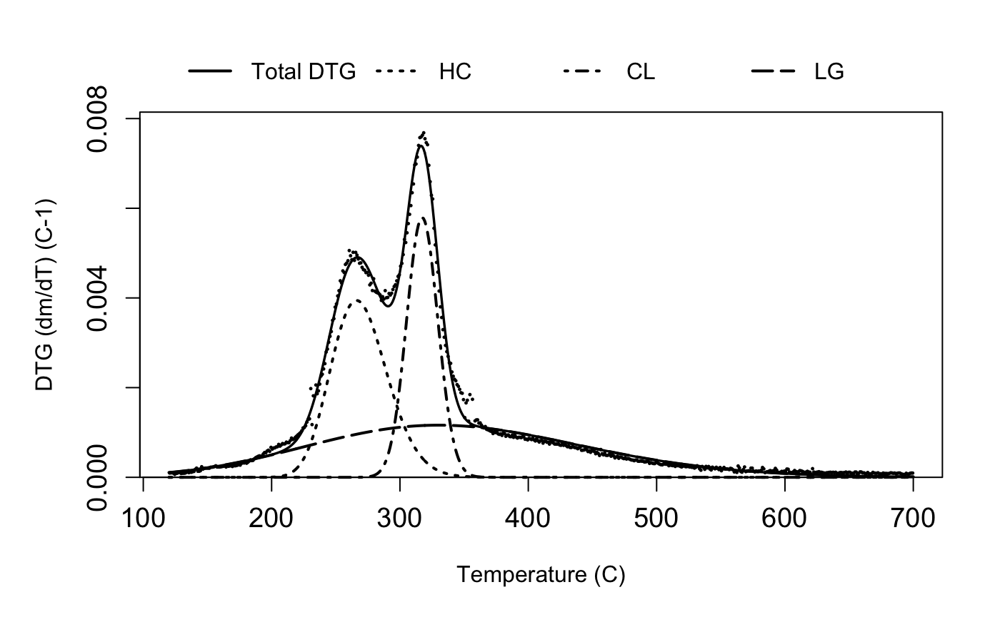

vignettes/deconvolve.Rmd
deconvolve.RmdEcologists are often interested in determining the composition of plant cell wall biomass, primarily hemicellulose, cellulose, and lignin carbon types (collectively termed lignocellulosic biomass). Proportions of these carbon types are useful for estimating kinetic decay parameters or for calculation of intrinsic plant traits. Traditional methods for calculation of lignocellulosic biomass involve wet chemistry methods that can be monetarily and environmentally costly. Thermogravimetric analysis (TGA) is an alternative method, already used in the biofuel field, to approximate these carbon compounds from mass loss data obtained by heating a biomass sample (in a \(N_2\) environment, termed pyrolysis).
To estimate carbon components from this mass loss data we have to take the derivative, to find the rate of mass loss across temperature, and then use a mixture model to separate the multi-peaked derivative curve into constituent parts. This process is called deconvolution, and is typically conducted in proprietary peak-fitting softwares, which, while effective, are not open source. This package seeks to provide a platform for reproducible deconvolution using R. This methodology has been tested on a range of plant litter composed primarily of soluble carbohydrates, hemicellulose, cellulose, and lignin. For more details (link paper here).
The meat of this package is in the mixture model used to deconvolve the derivative rate curve. Many different mathematical models have been proposed to fit the form of the independent curves, including Gassian, Lorentzian, Weibull, the asymmetric bi-Gaussian, and the Frazer-Suzuki distributions. Symmetric curves such as the Gaussian and Lorentzian curves struggle to model these kinetic curves because they are often asymmetric. The four-parameter Fraser-Suzuki function is highly flexible and therefore performs well.
\[\begin{equation} \frac{d\alpha_i}{dT} = h_i\ exp\bigg\{-\frac{ln2}{s_i^2}\Big[ln\Big(1 + 2s_i \frac{T - p_i}{w_i}\Big)\Big]^2\bigg\} \end{equation}\]Because we can assume that the carbon components decay relatively independently, we can thus model the full multi-peaked derivative rate of mass loss curve as the sum of independent Fraser-Suzuki curves. You can play around with changing individual parameters for each curve, and check out the effect on the overall decay curve, using the widget below:
To use the deconvolve package, first you’ll need to load your mass loss by temperature data. This package was developed using TGA data produced by a Netzsch TGA-FTIR thermogravimetric analyser, which output the data as a table with temperature and mass loss. If your TGA machine outputs data in another format, you’ll need to reformat like the example below, or get in touch with us, and we’ll add new functionality to accommodate your data formats.
We have included an example dataset in this package, called juncus, that we will use for this demonstration and that you can have a look at to check if your data is in the right format. The juncus dataset contains mass loss and temperature data derived from the theromogravimetric analysis of a sample of the freshwater reed, Juncus amabilis.
library(deconvolve)
data(juncus)
head(juncus)## temp_C mass_loss
## 1 31.453 -0.000931
## 2 31.452 -0.001340
## 3 31.450 -0.001350
## 4 31.450 -0.001660
## 5 31.450 -0.001680
## 6 31.450 -0.001800process dataThe process function takes the derivative of our mass loss data, resulting in rate of mass loss over temperature data. To use this function you simply need to specify the dataset, identify which columns contain temperature and mass loss data, and provide a value for the starting mass of the sample. The function defaults to temperature data in Celsius, but you can also modify to indicate the data is provided in Kelvin, by specifying the argument temp_type = 'K.
tmp <- process(juncus,
temp_col = 'temp_C',
massloss_col = 'mass_loss',
init_mass = 18.96)
tmp## Derivative thermogravimetry data (DTG) calculated for 768 datapoints from 31.5 to 798.52 degrees C.The default plotting option for your processed data is the DTG curve, but you can check out the original mass loss curve on its own or together with the DTG curve by specifying the plot_type argument.
plot(tmp, plot_type = 'both')
deconvolve dataProcessed data then simply needs to be deconvolved into its constituent parts. The deconvolve function takes care of this step, by cropping the derivative data to exclude the early mass loss from dehydration and then running the Fraser-Suzuki mixture model. Although most biomass samples have only three main components (corresponding to hemicellulose, cellulose, and lignin), some have a second hemicellulose curve in the low temperature range. The second example dataset marsilea is an example of this. The deconvolve function will decide whether three or four curves are best, but you can override it by modifying the n_curves argument. The function also has built in starting values for the nonlinear optimisation. If you’d like to modify those, or the upper and lower bounds for the parameter estimates, you can also do so with the start_vec, lower_vec, and upper_vec arguments to deconvolve().
output <- deconvolve(tmp)
output## Deconvolution by 3-part Fraser-Suzuki mixture model fitted to 580 datapoints from 120 to 700 degrees C.The deconvolve() function results in a few different outputs. You can look at each output individually using accessor functions.
ModData() will show you the modified dataset used for fitting:
head(ModData(output))## temp_C deriv mass_T
## 5325 120.514 9.570652e-05 17.91630
## 5384 121.501 9.885901e-05 17.91445
## 5445 122.515 1.003878e-04 17.91252
## 5505 123.514 9.133606e-05 17.91079
## 5565 124.513 6.493836e-05 17.90956
## 5625 125.509 8.578618e-05 17.90794Bounds() will print the temperature values at which the data were cropped for analysis:
Bounds(output)## [1] 120 700Model() will show you the output of the Fraser-Suzuki mixture model:
Model(output)## Nonlinear regression model
## model: deriv ~ fs_mixture(temp_C, h1, s1, p1, w1, h2, s2, p2, w2, h3, s3, p3, w3)
## data: dataframe
## h1 s1 p1 w1 h2 s2 p2
## 3.944e-03 1.258e-01 2.662e+02 5.106e+01 5.793e-03 1.344e-02 3.173e+02
## w2 h3 s3 p3 w3
## 2.866e+01 1.163e-03 1.085e-01 3.300e+02 2.500e+02
## residual sum-of-squares: 9.299e-06
##
## Number of iterations to convergence: 23
## Achieved convergence tolerance: 1.49e-08We can see the estimated parameter values (h = height, s = skew, p = position, and w = width) for each curve. Curve 1 is hemicellulose, curve 2 is cellulose, and curve 3 is lignin. If present, the optional fourth curve located at the lowest temperature interval will be listed as curve 0.
Weights() will display the mean proportions as well as estimated upper and lower confidence intervals of each carbon component:
Weights(output)## HC CL LG value_type
## 1 20.43273 16.64336 29.52019 2.5%
## 2 22.75751 18.67005 31.83022 97.5%
## 3 21.56004 17.67487 30.66299 meanTake a look at your plot. Do the estimates seem reasonable? In many cases, the peak of HC occurs at the lowest temperature, followed by CL and finally LG. If your plot doesn’t follow this pattern, can you think of an ecological explanation given your species/plant material type?
plot(output)
This is still a work in progress! If you see any mistakes, or find that the code is not functioning well on your data, let me know by logging a bug on the issues page of the github: http://www.github.com/smwindecker/deconvolve. Thanks to the Holsworth Wildlife Reseach Endowment & The Ecological Society of Australia for support on this project.